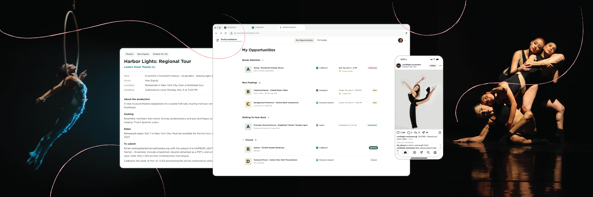
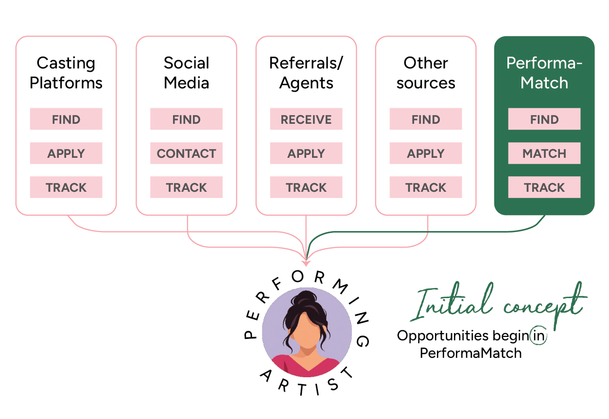
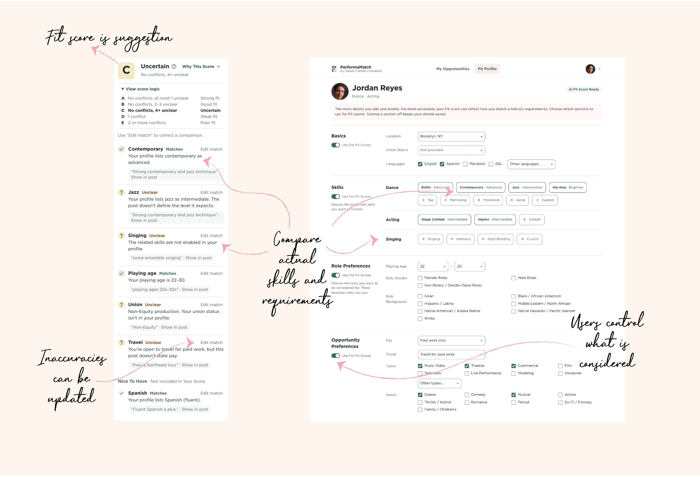

PerformaMatch
PerformaMatch wanted to play a part in the future of casting. My role was to figure out which.

PerformaMatch started with a vision: an equitable platform that uses AI to give performing artists more control over their casting journey. Dancers, actors, and models could use fit scoring, video analysis, and a calendar-integrated submission manager to find and manage opportunities.
I joined the project to test the assumptions underneath that vision. Research showed that artists were already stretching themselves across casting platforms, social media, referrals, and offline channels, while paid casting services added pressure to already limited budgets. So instead of asking performers to move to a brand new website, I reframed PerformaMatch as a cross-platform management layer for the places performers already frequented.
ACT I · OPENING SCENE
The founder had an ambitious vision that needed validating.
When my founder friend introduced her latest venture, PerformaMatch, the mission immediately intrigued me. Having briefly fancied myself a background actor at some point, I also had my own taste of casting websites. The process can be a headache to navigate, and access is uneven, so I could see why AI might help artists discover opportunities more efficiently.
What I was less convinced by was the need for another casting platform.
By the time I joined, the product direction was already taking shape. I wanted to understand where the existing casting industry was actually failing performers, whether AI could help, and whether a new marketplace could realistically earn a place in an already crowded industry.
I took three assumptions into the research:
Better matching could surface roles based on skills, experience, goals, and fit.
The sample was small, so I prioritized range.
The founder envisioned PerformaMatch working across disciplines, career stages, locations, and representation status.
Certainly, designing for everyone is every founder’s dream.
I looked for performing artists across performance fields and career stages, leaning toward earlier-career performers because I expected them to feel the access and discovery problems more acutely. With only about two weeks to recruit, most participants came through my social network and were based in New York.
ACT II · RISING CONFLICT
Under the weight of reality, the original assumptions had to bend.
Relevance couldn’t come at the expense of lead volume.
Participants wanted help finding better-matched opportunities, but not if personalization narrowed the market available to them. Breadth and relevance were complementary needs.
What performers prioritized
When choosing a casting platform, which features or values are most important to you? Select 3. · n=22
- Number of available roles77% (17/22)
- Relevance of suggested roles59% (13/22)
- Access to restricted roles41% (9/22)
- Simple, fast applications41% (9/22)
- Tools for fair access18% (4/22)
- Flexible payment options18% (4/22)
- Career insights9% (2/22)
- Other5% (1/22)
But then came the elephant in the room: where would PerformaMatch get enough job inventory to make matching useful? The concept depended on casting professionals posting directly, and the team couldn’t find a viable path to integrate established platforms. Without those integrations, PerformaMatch would have to build its own supply, while established platforms already held the listings and industry connections performers relied on. AI and better UX alone could not manufacture that advantage.
In my sample, access often meant being able to afford participation.
“To be competitive in this industry, you have to spend a lot of money. That’s completely antithetical to the idea of diversity, equity, and inclusion.”
Participants described the accumulated cost of staying competitive: subscriptions, paywalls, premium services, training, materials, and maintaining accounts across several platforms. Eleven of 22 respondents (50%) cited difficulty affording premium subscriptions as a reason they had felt excluded or overlooked, making it the most-selected barrier in that question.
Access was also shaped by representation. Nine respondents (41%) named lack of representation among the reasons they felt excluded or overlooked, and nine (41%) prioritized access to roles typically restricted to agents or industry insiders. Five selected both.
That left me with an uncomfortable question: if performers were already paying for access to opportunity, would another paid platform really redistribute it?
Meanwhile, the actual casting workflow was scattered everywhere.
The 22 surveyed performers could select multiple discovery channels. Ten (45%) named navigating multiple platforms as one of the most frustrating parts of casting.
Opportunity discovery
Discovery was only the beginning. Performers were also balancing day jobs, training, self-tape deadlines, live auditions, preparation, submissions, and callbacks. Once they found a promising opportunity, they still had to keep track of what needed to happen next. For some performers, time was part of the access problem.
“[…] the people who have more flexible day jobs […] will be the ones to submit first. And they will be the ones to be more likely to be cast.”
AI matching needed more than a convincing score.
AI could help performers compare opportunities, but I couldn’t assume they would trust its recommendations. When asked what influenced their trust in AI role matching, 10 of 22 respondents (45%) selected clear explanations of why matches happen, while nine (41%) selected visible human oversight.
“Back in the day before I was represented, I was checking everything: Equity, Playbill, Actors Access, Backstage.”
Not every important problem was ours to solve.
Participants also wanted clearer submission status and feedback, but reliable updates depended on participation from casting professionals. A performer-side MVP couldn’t independently show what was happening on the casting side. That distinction forced me to consider where the product could realistically create value, and where it couldn’t.
ACT III · PLOT TWIST
The product boundary was in the wrong place.
The original model assumed opportunities would start inside PerformaMatch: inventory → AI matching → application → tracking. But performers’ job searches already stretched far beyond any one platform. PerformaMatch didn’t need to own where an opportunity came from to help make sense of what happened next.
The research pointed to more than one possible pivot.
I considered abandoning the marketplace, aggregating outside opportunities, or building a standalone performer tool. Aggregation depended on data we didn’t control, while the other two options would take us further from the founder’s broader platform vision.
I was looking for something in between: a model that could create value before the marketplace had scale, fit the way performers already found work, and still leave room for that broader vision.


How might we help performers understand, prioritize, and manage opportunities across the platforms they already use, without asking them to abandon those platforms?
INTERMISSION
A utility can create value with one performer.
A marketplace cannot.
ACT IV · ROLE CHANGE
AI stopped vying for the lead role and fell back as a supporting player.
What surfaced most clearly in the research was the burden of managing opportunities across scattered channels. That became the product opportunity: AI could help performers make sense of what they found, wherever they found it. The intended payoff was time: less spent searching and on admin tasks, more spent improving their craft.
Because trust in AI was already fragile, the analysis needed to show its reasoning and keep the performer in control. A performer could find a role through a casting platform, social media, email, or word of mouth, then bring it into PerformaMatch for AI-assisted analysis. They could track and update opportunities regardless of where the lead was found or the application was submitted.
Once saved, opportunities could be managed in one place. A dashboard could track them through preparation, submission, callbacks, and follow-up. Over time, that history could support deeper personalization and insight.
The principle stayed simple: PerformaMatch could interpret and assist. The performer would decide.

ACT V · THE PITCH
The workflow's value should be proven before the platform is built.
Given the cost pressure that surfaced in research, asking performers to pay for another platform before experiencing its value felt unrealistic. I proposed a freemium model: a free browser extension for identifying, evaluating, and saving opportunities, with deeper management tools, AI video and material analysis, and career development support reserved for subscription.
While the team was working toward an MVP of the full platform, I proposed a smaller proof of concept to test the cross-platform workflow first. I worked with engineering to identify a feasible initial scope: user-triggered capture, structured opportunity records, basic profile comparison, and lightweight tracking.
The business case went beyond reducing development costs. By attracting performers through a free utility and seeing whether they returned to use it regularly, we could build an initial user base and gather behavioral evidence of demand. That evidence could help us decide whether to invest in the full platform and strengthen the case for future fundraising.
I still saw a role for AI down the line, but I didn’t think we needed it to test the workflow. A rules-based comparison could tell us whether performers found matching and prioritization useful. I also kept capture user-initiated: if performers found enough value in analyzing and managing opportunities, they might be willing to take that extra step. If the concept proved valuable, we could gradually reduce capture friction and introduce more advanced AI capabilities, platform integrations, and management tools.
The core loop is simple.
What I wanted to validate I proposed this test to gather evidence about the workflow, though I don’t have visibility into whether the team ultimately ran it.
-
Utility
Will performers capture opportunities more than once, and from more than one source?
Measure
Repeat captures across sources
Doesn't prove
Sustained adoption
-
Workflow
Will saved opportunities move from discovery into preparation and submission?
Measure
Opportunity status progression
Doesn't prove
Improved callback or booking rates
-
Long-term value
Will performers return to review or update opportunities they've already saved?
Measure
Return visits and updates
Doesn't prove
Long-term retention or more equitable outcomes
EPILOGUE
The founder agreed with the research, but the production timeline didn’t.
The team adopted the cross-platform workflow direction and is developing the browser extension as a core product feature, following the staged approach I proposed. My work concluded with the research and strategy handoff, while the original marketplace continued toward launch. The result wasn’t a full pivot, but the workflow strategy became part of PerformaMatch’s product direction.
Just another messy start-up origin story.
What I learned
I came into PerformaMatch wanting to understand whether AI and a new marketplace were really the strongest path toward the equity the founder envisioned. I still believe AI can help narrow the access gap, but as a management layer instead of a new marketplace. If performers were already paying for access, a free tool could take one more cost off the table while helping them manage the time and work that came after finding an opportunity. It could save performers time on administrative work, give those without representation some of what an agent provides, and give every performer more time to develop their artistry.
The project also cemented how I think about business timing and strategy. Foundational research has the most leverage while strategic decisions are still reversible. When joining a product already in motion, I’d first map what has already been committed, what is still flexible, and where research can realistically change direction. Maybe next time, I can be in the room where it happens from the beginning.